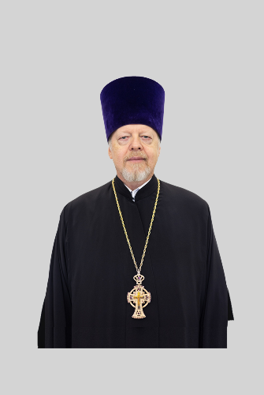

Настоятель храма
Протоиерей
Андрей Хохлов
Андрей Сергеевич Хохлов
Настоятель храма с 1993 года. На Пасху 1993 года совершил первую Литургию после многолетнего перерыва — в Никольском приделе, где был устроен временный алтарь.
Страница в епархиальном справочнике